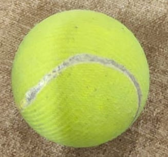
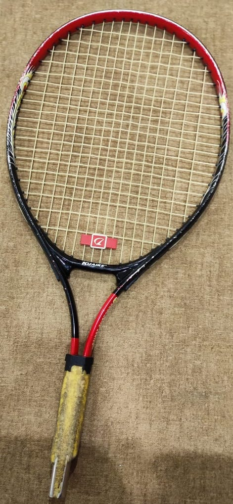
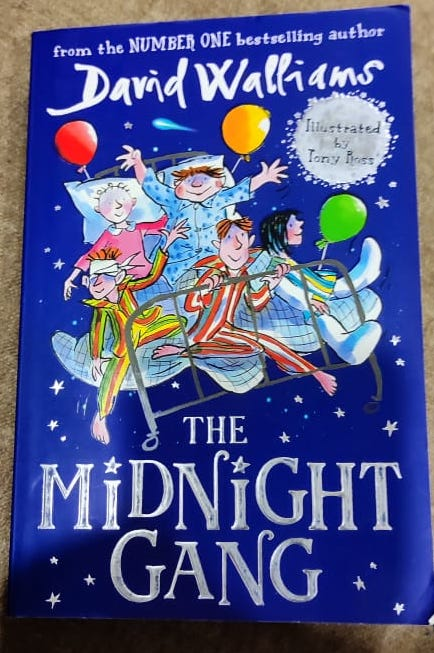

Case Study 2
mobile-net vs google-Lens

Output on google-Lens
9.5'' oversize giant tennisball
Output on mobile-net
Tennis Ball

Output on google-Lens
Tennis racket
Output on mobile-net
Racket

Output on google-Lens
The Midnight Gang
Output on mobile-net
Comic book
I have tested 3 images
Mobilenet have predicted 2 of them correctly. And google-Lens have predicted 3 of them correctly.
So according to my case study google-Lens is more Accurate